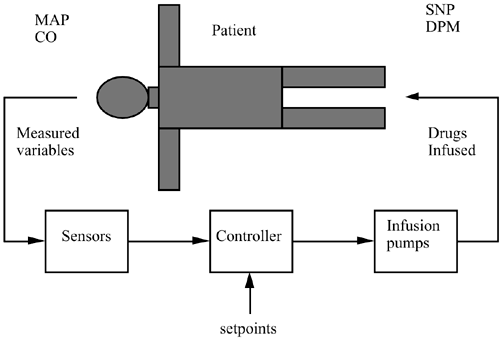

| [ Team LiB ] |
|
M14.6 Drug Infusion SystemCritical care patients have often suffered a "disturbance" to the normal operation of their physiological system; this disturbance could have been generated by surgery or some sort of trauma (e.g., a heart attack). A responsibility of the critical care physician is to maintain certain patient outputs within an acceptable operating range. Two important outputs to be maintained are mean arterial pressure (MAP) and cardiac output (CO). Often the anesthesiologist will infuse several drugs into the patient in order to control these states close to the desired values. A conceptual diagram is shown in Figure M14-6. Figure M14-6. Drug infusion control. The goal of this control system design is to manipulate the flow rate of two drugs, dopamine (DPM) and sodium nitroprusside (SNP), to maintain the two outputs (MAP and CO) at their desired setpoints. A successful implementation of such a strategy allows the anesthesiologist to spend more time monitoring other patient states, such as "depth of anesthesia." The steady-state (initial) drug infusion rates are both 0, while the steady-state (initial) mean arterial pressure is 120 mmHg and cardiac output is 130 ml/(kg min). A partial solution to this problem is presented on the textbook web page. The maximum flow rates for both drugs is 10 mg/(kg min). |
| [ Team LiB ] |
|